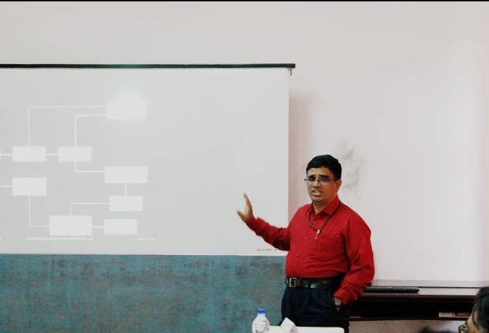
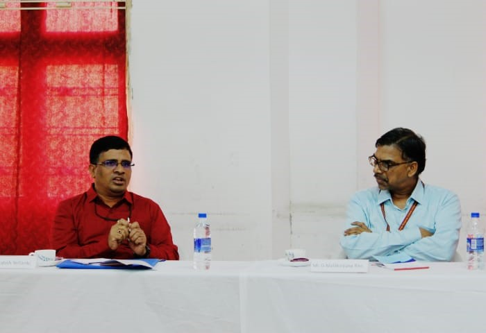

AAC GRIET had organized a conclave at the GRIET campus on 17th August 2019 from 1pm to 4pm The theme of the session being “DATA SCIENCE”.The conclave proved to be an impactful platform where an array of inspirational group of people were brought together ,that included select few students with the necessary capabilities of the committee,thought provoking professors and a data scientist with cutting edge entrepreneurial skills-Mr.Satish Yellanki.
Sathish Yellanki is having 20+ Years of I.T. Exposure in Various Areas of Computer Science Industry. He has been part of Relational, Object Relational And Object Oriented Databases in Design, Analysis and Coding.He has also designed various Domains Like Health Care, Education, Retail And E-Commerce.
Mr.Satish has further extended his research to Data Ware Housing and Business Intelligence domains. He is an expert in System Analysis and Design with Relational And Dimensional Modeling and worked in critical areas like Performance, Tuning And Optimization of Oracle Database.
He is currently actively involved in the world of Big Data with Hadoop Framework, Apache Pig, Hive And HBase, Spark and Scala integrated with Cloud and IOT Platforms since 7 Years. He is Working With His Small Team of Professionals on Machine Learning Aspects in The Areas of Agricultural Datasets And Health Care Implementation.
Dr. Jandhyala Narayana Murthy ( Director of GRIET ) , Dr.J. Praveen ( Principal of GRIET ) , Dr. RamaMurthy Suri ( Associate Dean of AAC ) were invited to the conclave to be a part of this discussion forum .
The main agenda of the conclave was to absorb real time projects from the industrial expert for the students to work upon and to grasp insights from his speech .
Faculty mentors like Dr.Y.Nagendra Reddy , Dr.G.Mallikarjuna Rao , Dr. Indira , Mr.G.Pradeep Reddy also interacted with the Guest and shared their valuable ideas and insights on development of an industry expected , real time data science product .
AAC students who have ethical knowledge on data science were selectively chosen to be a part of the conclave namely Saif , Vishnu , Lokesh Konjeti , Lokesh Kamineni , Sahiti Cheguru , Sriram Naidu and Jeetesh .
An introduction and vision of the meeting,provided by Dr.Ramamurthy Suri,kickstarted the conclave.Satish Yellanki,spoke in depth on ,”Becoming Data Science Leaders”.He emphasised on the ability to question and handle these questions and conceptualised learning.
He discussed about various important topics in Data Science which include the life cycle of Data Mining , Process Flow in structuring the data . According to him “Data Science is a detailed study of the flow of information from the colossal amounts of data present in an organization’s repository. It involves obtaining meaningful insights from raw and unstructured data which is processed through analytical, programming, and business skills.”.
He also explained the about the life cycle of the data science in detail which includes :
Data Discovery:
The first phase in the Data Science life cycle is data discovery for any Data Science problem. It includes ways to discover data from various sources which could be in an unstructured format like videos or images or in a structured format like in text files, or it could be from relational database systems.
Data Preparation:
Once the data discovery phase is completed, the next stage is data preparation. It includes converting disparate data into a common format in order to work with it seamlessly. This process involves collecting clean data subsets and inserting suitable defaults, and it can also involve more complex methods like identifying missing values by modeling, and so on. Once the data cleaning is done, the next step is to integrate and create a conclusion from the dataset for analysis. This involves the integration of data which includes merging two or more tables of the same objects, but storing different information, or summarizing fields in a table using aggregation. Here, we would also try to explore and understand what patterns and values our datasets have.
Mathematical Models:
All Data Science projects have certain mathematical models driving them. These models are planned and built by the Data Scientists in order to suit the specific need of the business organization. This might involve various areas of the mathematical domain including statistics, logistic and linear regression, differential and integral calculus, etc. Various tools and apparatus used in this regard could be R statistical computing tools, Python programming language, SAS advanced analytical tools, SQL, and various data visualization tools like Tableau and QlikView.
Also, to generate a satisfactory result, one model might not be enough. We need to use two or more models. In this scenario, a Data scientist will create a group of models. After measuring the models, he/she will revise the parameters and fine-tune them for the next modeling run. This process will continue until the Data Scientist is pretty sure that he/she has found the best model.
Machine Learning:
As a Data Scientist, every day, you will be using Machine Learning algorithms such as regression and classification methods. It is very important for a Data Scientist to know Machine learning as a part of their job so that they can predict valuable insights from available data.
Big Data:
In the current world, raw data is compared with crude oil, and the way we extract refined oil from the crude oil, by applying Data Science, we can extract different kinds of information from raw data. Different tools used by Data Scientists to process big data are Java, Hadoop, R, Pig, Apache Spark, etc.
He further extended his speech about how real time data can be generated . In recent years, there is a huge growth in the field of Internet of Things (IoT), due to which 90 percent of the data has been generated in the current world. This data comes from all possible sources such as: